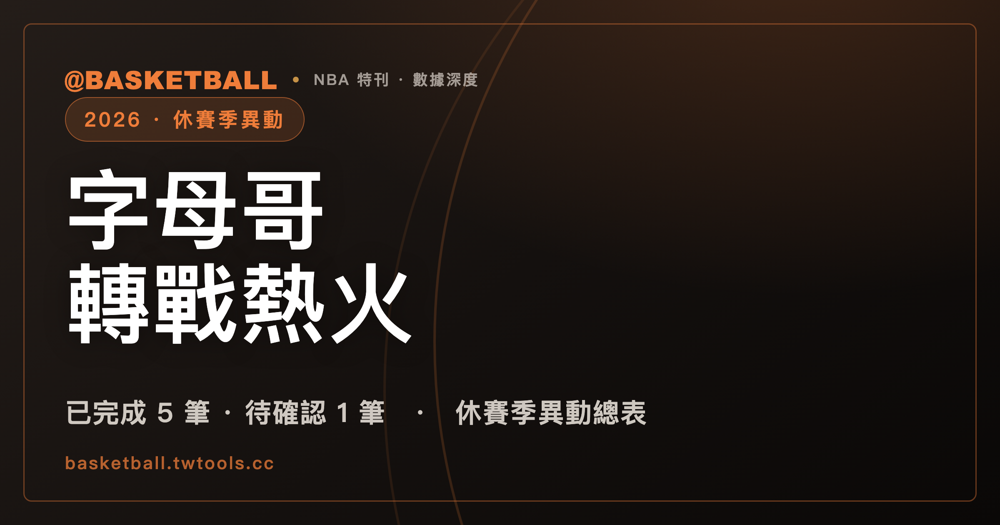

2026 NBA 休賽季異動總表：字母哥轉戰熱火、傑倫布朗換來保羅喬治，已完成與待確認一次看
2026 年 NBA 休賽季出現多筆改變球隊核心結構的異動，其中四筆頭條交易已經完成：安戴托昆波（Giannis Antetokounmpo）加盟邁阿密熱火（Miami Heat）、傑倫布朗（Jaylen Brown）與保羅喬治（Paul George）互換東家、莫蘭特（Ja Morant）轉戰波特蘭拓荒者（Portland Trail Blazers）、鮑爾（LaMelo Ball）加盟明尼蘇達灰狼（Minnesota Timberwolves）；雷納德（Kawhi Leonard）到多倫多暴龍（Toronto Raptors）的交易則因聯盟對洛杉磯快艇（LA Clippers）的調查而暫停，詹姆斯（LeBron James）截至本文整理時間點仍未宣布下一站。

NBA · 休賽季異動總表｜頭條交易 4 筆 · 待確認 1 筆 · 未定案 1 人
2025-26 NBA 賽季在 2026 年 6 月 14 日隨著紐約尼克（New York Knicks）以總冠軍賽 4:1 擊敗聖安東尼奧馬刺（San Antonio Spurs）結束。接下來這個休賽季的球員異動密度，高於一般年份。單就已經完成的交易來看，就有一位兩度拿下年度最有價值球員（MVP，Most Valuable Player）的球星換了東家，另有三支球隊直接換掉了自家的主控或當家球星。與此同時，還有一筆已經談定的交易被聯盟的調查程序卡住，以及一位生涯累積成就足以左右整張聯盟版圖的球員尚未決定去向。
這篇整理把這個休賽季的球員異動拆成三種狀態分別列出：已完成（球團已正式宣布、交易生效）、待確認（雙方已達成協議但因程序因素尚未生效）、未定案（球員本人尚未做出決定或尚未簽約）。把狀態分開列，是因為休賽季的資訊落差經常出現在「談定」與「生效」之間。一筆交易在媒體上出現的時間，往往比它正式生效的時間早上好幾天甚至好幾週——今年尤其明顯，因為 7 月 1 日至 6 日的自由市場凍結期（moratorium）把大量 6 月底就談定的案子，統一擠到美東時間 7 月 6 日中午 12:01 解禁之後才正式生效，而這中間的差距，在今年的雷納德（Kawhi Leonard）案例上被拉到了異常長的程度。
全文資料查核截至 2026 年 7 月 20 日下午（台北時間），來源以 NBA 官方公告為準；本文於同日經外部查核後兩度修訂，最後一次對源時間為 2026 年 7 月 20 日 15:10。休賽季仍在進行中，尚未定案的部分會隨時間變動，文中所有標為「待確認」與「未定案」的項目，請以各球團與聯盟後續的正式公告為準。部分較年輕的球員在台灣尚未有通行的中文譯名，本文保留英文原名，不自行音譯。
一、休賽季異動總表
以下是這個休賽季已完成與待確認的重量級異動彙整。為了讓「換回什麼」一目了然，交易的另一端（原球隊收到的球員與選秀權）另外分列於後面各節：
| 球員 | 原球隊 | 新球隊 | 狀態 | 時間點 |
|---|---|---|---|---|
| 安戴托昆波（Giannis Antetokounmpo） | 密爾瓦基公鹿 | 邁阿密熱火 | 已完成 | 6 月 22 日談定・7 月 6 日正式完成 |
| 波堤斯（Bobby Portis） | 密爾瓦基公鹿 | 邁阿密熱火 | 已完成 | 同上（隨同交易） |
| 傑倫布朗（Jaylen Brown） | 波士頓塞爾提克 | 費城七六人 | 已完成 | 2026 年 7 月 6 日 |
| 保羅喬治（Paul George） | 費城七六人 | 波士頓塞爾提克 | 已完成 | 2026 年 7 月 6 日 |
| 莫蘭特（Ja Morant） | 曼菲斯灰熊 | 波特蘭拓荒者 | 已完成 | 2026 年 6 月 29 日 |
| 鮑爾（LaMelo Ball） | 夏洛特黃蜂 | 明尼蘇達灰狼 | 已完成 | 6 月 25 日談定・7 月 10 日正式完成 |
| 藍道（Julius Randle） | 明尼蘇達灰狼 | 布魯克林籃網 | 已完成 | 7 月 10 日正式完成（同筆四隊交易） |
| 克拉克斯頓（Nic Claxton） | 布魯克林籃網 | 芝加哥公牛 | 已完成 | 7 月 10 日正式完成（同筆四隊交易） |
| 楊恩（Trae Young） | — | 華盛頓巫師（續約） | 已完成 | 6 月 22 日談定・7 月 6 日正式確認 |
| 八村壘（Rui Hachimura） | 洛杉磯湖人 | 洛杉磯快艇 | 已完成 | 7 月 6 日正式完成 |
| 雷納德（Kawhi Leonard） | 洛杉磯快艇 | 多倫多暴龍 | 待確認（聯盟調查中） | 2026 年 6 月 30 日達成協議 |
| 詹姆斯（LeBron James） | 洛杉磯湖人 | 未定 | 未定案 | 已告知湖人不再續留 |
把這張表放在一起看，最直接的訊號是東區（Eastern Conference）的重心在這個休賽季被大幅重畫。邁阿密熱火（Miami Heat）、費城七六人（Philadelphia 76ers）、波士頓塞爾提克（Boston Celtics）三支球隊的先發核心都出現變動，而其中兩筆交易的對手方，也就是密爾瓦基公鹿（Milwaukee Bucks）與波士頓塞爾提克，換回的都是以選秀權與年輕球員為主的組合。西區（Western Conference）這邊，波特蘭拓荒者與明尼蘇達灰狼各補進一名當家控球後衛，曼菲斯灰熊（Memphis Grizzlies）與夏洛特黃蜂（Charlotte Hornets）則同步進入重建節奏。
二、安戴托昆波加盟熱火：休賽季最大一筆
這個休賽季最受矚目的一筆交易，是效力密爾瓦基公鹿 13 個賽季的安戴托昆波轉戰邁阿密熱火。根據 ESPN 的報導，安戴托昆波與波堤斯（Bobby Portis）一同被送往邁阿密，公鹿換回的是希羅（Tyler Herro）、Kasparas Jakučionis、哈克斯（Jaime Jaquez Jr.）與威爾（Kel'el Ware）四名球員，另外還取得 2026 年選秀會第 13 順位選秀權、2030 年首輪選秀權互換權（pick swap），以及 2031 年與 2033 年的首輪選秀權和 2033 年的一個次輪選秀權。這筆交易在 2026 年選秀會之前就已談定，公鹿也因此得以在該年選秀會上直接運用換來的第 13 順位；不過依 NBA 官方公告，交易是在聯盟自由市場凍結期結束後的 7 月 6 日才正式完成。
| 送往邁阿密熱火 | 送往密爾瓦基公鹿 |
|---|---|
| 安戴托昆波（Giannis Antetokounmpo） | 希羅（Tyler Herro） |
| 波堤斯（Bobby Portis） | Kasparas Jakučionis |
| — | 哈克斯（Jaime Jaquez Jr.） |
| — | 威爾（Kel'el Ware） |
| — | 2026 年首輪第 13 順位 |
| — | 2030 年首輪選秀權互換權 |
| — | 2031 年、2033 年首輪選秀權 |
| — | 2033 年次輪選秀權 |
從時間軸來看，這筆交易並不是突然發生的。ESPN 的報導指出，安戴托昆波與其經紀團隊自 2025 年 5 月起就持續向公鹿表達希望被交易的意願，理由是他認為球員與球團分開對雙方都比較好，整個過程橫跨大約 13 個月才走到最後。這是一筆醞釀超過一年的交易，不是自由市場開啟後幾天內談成的結果。
對邁阿密而言，安戴托昆波將與同樣入選過明星賽的內線阿德巴約（Bam Adebayo）組成前場搭檔。在交易消息傳出後，熱火在博彩市場上的總冠軍賠率從 據 DraftKings 在消息傳出後的盤口（CBS Sports 於 6 月 23 日的報導快照），30 比 1 調整到 18 比 1，東區冠軍賠率則來到 6 比 1。這是市場對球隊實力變化的即時反應，不等同於實際戰績預測，這裡列出只是作為外界評價變化的一個參考點。對密爾瓦基來說，換回的是一套以年輕球員與未來選秀權為主的組合，球隊的建隊節奏因此明顯往後遞延。
熱火已於 2026 年 7 月 16 日為安戴托昆波舉行入隊記者會，總教練史波爾史特拉（Erik Spoelstra）與籃球事務總裁萊里（Pat Riley）都出席。需要說明的是，安戴托昆波本人在新東家的合約狀態，外界報導提到熱火與他之間仍有延長合約（extension）的選項待處理。這部分屬於後續發展，本文不對尚未簽署的合約內容做推測。
三、傑倫布朗與保羅喬治互換：東區兩支老牌強隊一起換血
第二筆改變東區結構的交易，是波士頓塞爾提克把傑倫布朗送往費城七六人，換回保羅喬治與四個選秀權。兩隊在 2026 年 7 月 1 日達成協議，交易在 7 月 6 日正式生效。
根據報導的細節，費城送往波士頓的除了保羅喬治之外，還包括 2028 年的一個首輪選秀權（附帶條件，可能轉為對波士頓較有利的互換權）、2031 年的一個無保護首輪選秀權，以及兩個次輪選秀權：2028 年次輪（金州勇士、奧克拉荷馬雷霆、密爾瓦基公鹿三者中順位較前者）與 2030 年次輪（華盛頓巫師、波特蘭拓荒者、鳳凰城太陽三者中順位較前者）。
| 送往費城七六人 | 送往波士頓塞爾提克 |
|---|---|
| 傑倫布朗（Jaylen Brown） | 保羅喬治（Paul George） |
| — | 2028 年首輪選秀權（附條件） |
| — | 2031 年無保護首輪選秀權 |
| — | 2028 年次輪選秀權 |
| — | 2030 年次輪選秀權 |
這筆交易在波士頓當地引發的討論相當兩極。傑倫布朗在塞爾提克待了 10 個賽季，5 度入選明星賽，上個賽季的年度最有價值球員票選排名第六；《波士頓環球報》（The Boston Globe）的評論版面上出現了把這筆交易稱為波士頓體育史上最糟糕交易之一的專欄文章。另一方面，兩隊在上個賽季的季後賽有直接交手紀錄：費城七六人在 2026 年季後賽首輪淘汰了波士頓塞爾提克，這也是外界解讀塞爾提克為何選擇在此時重組陣容時，經常被提到的一個背景。
至於保羅喬治這一端，他是在四年 2 億 1,200 萬美元的自由球員合約還剩兩年的情況下被交易，這份合約在費城的兩個賽季普遍被認為未達預期。交易發生時他 36 歲，競技狀態與生涯高峰期已有相當差距。這裡列出的是外界對交易評價的整體傾向，實際表現仍要看新賽季開打後的實際數據。
四、莫蘭特轉戰拓荒者：灰熊送走隊史選秀順位最高的後衛
2026 年 6 月 29 日，曼菲斯灰熊將莫蘭特送往波特蘭拓荒者，換回格蘭特（Jerami Grant）與莫瑞（Kris Murray）兩名前鋒，另外據記者 Jake Fischer 報導附帶 100 萬美元的現金補償（cash considerations）——這筆現金並未出現在聯盟官方的交易清單與球團新聞稿中。
| 送往波特蘭拓荒者 | 送往曼菲斯灰熊 |
|---|---|
| 莫蘭特（Ja Morant） | 格蘭特（Jerami Grant） |
| — | 莫瑞（Kris Murray） |
| — | 100 萬美元現金補償（據報導） |
這筆交易的完成時間值得注意：拓荒者在 6 月 29 日當天就發出新聞稿宣告交易生效，趕在 2026-27 賽季年度開始之前。依報導的說法，若交易拖到 7 月 6 日的凍結期之後才定案，莫蘭特將可觸發一筆兩年約 1,300 萬美元的交易獎金；提前完成讓這筆獎金沒有發生。
莫蘭特是 2019 年選秀會第 2 順位進入聯盟，此前整個生涯都在曼菲斯度過，拿過 2020 年的年度最佳新秀（Rookie of the Year），兩度入選明星賽，生涯場均得分為 22.4 分。不過近三個賽季，他因為傷勢與禁賽合計只出賽 79 場。這個出賽場數對一支要以他為進攻軸心的球隊來說，是評估這筆交易時無法迴避的一項變數。灰熊在 2025-26 賽季的例行賽戰績是 25 勝 57 敗，排西區第 13；拓荒者則是 42 勝 40 敗、西區第 8，並在附加賽（Play-In Tournament）中以 114:110 擊敗鳳凰城太陽（Phoenix Suns），拿到季後賽第 7 種子。
五、鮑爾加盟灰狼：牽動四支球隊的連環交易
夏洛特黃蜂把鮑爾與格林（Josh Green）送往明尼蘇達灰狼，換回瑞德（Naz Reid）與一整包選秀權：2033 年無保護首輪選秀權、2029 年、2032 年、2033 年三個次輪選秀權，以及 2028 年、2029 年、2030 年三個首輪選秀權互換權。這筆交易最終以四隊交易的形式完成，參與的球隊除了灰狼與黃蜂之外，還有布魯克林籃網（Brooklyn Nets）與芝加哥公牛（Chicago Bulls）：藍道（Julius Randle）被送往布魯克林，克拉克斯頓（Nic Claxton）被送往芝加哥。依 Hoops Rumors 的說法，鮑爾這一段與藍道那一段原本是兩筆各自談成的協議，後來為了薪資配平的需要被併成同一筆交易處理。依 NBA 官方公告，這筆四隊交易的正式完成日是 2026 年 7 月 10 日。
| 送往明尼蘇達灰狼 | 送往夏洛特黃蜂 |
|---|---|
| 鮑爾（LaMelo Ball） | 瑞德（Naz Reid） |
| 格林（Josh Green） | 2033 年無保護首輪選秀權 |
| — | 2029、2032、2033 年次輪選秀權 |
| — | 2028、2029、2030 年首輪選秀權互換權 |
灰狼籃球事務總裁康納利（Tim Connelly）一直在尋找能與明星後衛愛德華茲（Anthony Edwards）搭配的第二核心，而球隊在控球後衛位置上的缺口在上個賽季季後賽期間變得更迫切：後衛迪文琴佐（Donte DiVincenzo）在季後賽期間阿基里斯腱斷裂。鮑爾上個賽季是近年來出賽最完整的一季，替黃蜂出賽 72 場，場均 20.1 分、4.8 籃板、7.1 助攻；在此之前的三個賽季，他都受到傷勢困擾。
六、待確認：雷納德到暴龍的交易卡在聯盟調查
這個休賽季最特殊的一筆，是一樁已經談定、卻遲遲無法生效的交易。多倫多暴龍與洛杉磯快艇在 2026 年 6 月 30 日就雷納德的交易達成協議，暴龍送出英格倫（Brandon Ingram）、迪克（Gradey Dick）、2031 年與 2033 年兩個無保護首輪選秀權、2027 年首輪選秀權互換權以及兩個次輪選秀權，換回這位兩度拿下總冠軍賽最有價值球員的前鋒。但這筆交易到目前為止都無法完成。
原因在於聯盟正在對快艇進行調查。根據 NBA 官網與 ESPN 的報導，調查的核心是快艇是否透過規避薪資帽（salary cap circumvention）的方式，把資金導向雷納德，具體指向的是雷納德與一家名為 Aspiration 的綠色金融公司之間、金額 2,800 萬美元的代言合約，而該公司同時也與快艇簽有一紙金額 3 億美元、為期 23 年的代言協議，目前該公司已破產。報導並指出，調查範圍後來還擴大到快艇可能替雷納德支付的其他費用，以及一份未曾揭露的第二份代言協議。快艇方面則否認相關指控，表示球團「並未把錢導向雷納德」。
暴龍與快艇在 2026 年 7 月 9 日共同確認，這筆交易將等到聯盟調查結束後才會完成。依報導，雙方真正的卡點在於風險分擔：快艇希望暴龍以書面形式承擔調查結果可能對雷納德合約造成的處罰風險，暴龍拒絕，選擇等聯盟給出結論再說。CBS Sports 的分析並指出，視調查結果而定，雷納德的合約在理論上存在被作廢的可能。暴龍方面表示仍希望把雷納德帶回多倫多，並期待調查能盡快有結論。聯盟總裁蕭華（Adam Silver）就此表示，這件事不能無限期拖下去，應該要在下個賽季開打前處理完畢。截至 2026 年 7 月 16 日的報導，調查距離收尾仍有數週之譜。
這筆交易目前的狀態是「雙方已達成協議、但尚未生效」，最終是否會依原條件完成，仍取決於聯盟調查的結果。這也是本文把它單獨列為「待確認」而不放進已完成交易表的原因。
七、未定案：詹姆斯的下一站
詹姆斯已經告知洛杉磯湖人（Los Angeles Lakers），下個賽季他將在別的球隊打球。不過截至本文整理的時間點，他尚未與任何球隊簽約。
外界報導中被提到的球隊包括克里夫蘭騎士（Cleveland Cavaliers）、邁阿密熱火、費城七六人與金州勇士（Golden State Warriors），他的經紀人保羅（Rich Paul）也曾與紐約尼克、費城七六人、波士頓塞爾提克等球隊接觸討論可能性。勇士的柯瑞（Stephen Curry）公開談過與詹姆斯合作的吸引力。到 7 月中旬，報導指出詹姆斯已經取得各隊提供的資訊、正在權衡選項，宣布時間可能是幾小時、幾天，也可能是幾週之後。
這件事的連帶影響已經溢出球員市場本身：聯盟總裁蕭華曾公開表示，2026-27 賽季的賽程表之所以還沒公布，原因之一就是詹姆斯的去向會影響賽程安排。上述所有球隊名單都屬於報導層級的可能性，不是已確認的結果；在他本人或球團正式宣布之前，本文不對最終落點做任何推測。
八、續約與自由市場：已完成的其他重要簽約
除了上述交易之外，這個休賽季也有幾筆值得記錄的續約與簽約。與前面的交易表相同，這裡把「談定」與「球團正式宣布」分開列；凍結期讓這兩個時間點在今年拉開得特別明顯。未取得球團正式公告的項目，一律標示為據報導。
| 球員 | 球隊 | 內容 | 時間 |
|---|---|---|---|
| 溫班亞馬（Victor Wembanyama） | 聖安東尼奧馬刺 | 5 年 2 億 5,200 萬美元新秀頂薪延長合約 | 2026 年 7 月 10 日 |
| 米契爾（Donovan Mitchell） | 克里夫蘭騎士 | 4 年 2 億 7,300 萬美元延長合約，含 2030-31 賽季 7,600 萬美元球員選項與完整交易保證金（trade kicker） | 7 月 7 日談定・7 月 9 日騎士宣布 |
| 小特倫特（Gary Trent Jr.） | 密爾瓦基公鹿 | 4 年 6,400 萬美元（他先拒絕了球員選項才投入自由市場） | 7 月 16 日公鹿正式宣布 |
| 克拉克森（Jordan Clarkson） | 紐約尼克 | 據報導為 1 年 390 萬美元老將底薪 | 7 月 9 日據報導談定（未取得球團正式公告） |
| 楊恩（Trae Young） | 華盛頓巫師 | 4 年約 2 億 1,200 萬美元，第 4 年球員選項 | 6 月 22 日談定・7 月 6 日正式確認 |
| 波辛基斯（Kristaps Porzingis） | 金州勇士 | 2 年 4,000 萬美元，第二年為球員選項 | 6 月 29 日至 30 日據報導談定 |
| 哈騰斯坦（Isaiah Hartenstein） | 奧克拉荷馬雷霆 | 3 年 7,500 萬美元延長合約，含最高 15% 交易保證金與雙方選項（mutual option） | 6 月底談定・7 月 6 日雷霆正式完成 |
| 伊森（Tari Eason） | 休士頓火箭 | 5 年 8,150 萬美元，第五年為球員選項 | 7 月 2 日談定・7 月 9 日火箭正式宣布 |
| 米德頓（Khris Middleton） | 華盛頓巫師 | 3 年 1,760 萬美元（簽換形式） | 2026 年 7 月 8 日正式宣布 |
| 威廉斯（Ziaire Williams） | 洛杉磯湖人 | 1 年 300 萬美元 | 2026 年 7 月 13 日 |
溫班亞馬的續約值得多說一句。報導指出他簽下的是 25% 新秀頂薪，而不是可以拿到的 30% 頂級延長合約（supermax）。這個選擇讓合約總值停在 2 億 5,200 萬美元，而非帶有加薪條款、上看 3 億 300 萬美元的版本，換來的是馬刺在薪資結構上多出來的操作空間。合約的第五年帶有球員選項（player option）。楊恩這一筆也有類似的性質：他先前拒絕了一份 4,900 萬美元的球員選項，最後簽下的這份合約金額低於他在華盛頓可拿到的頂薪上限。
九、其他已完成的交易
除了前面幾筆頭條級的交易之外，這個休賽季還有一批中量級的異動同樣改變了不少球隊的輪換陣容：
| 日期 | 異動 | 主要內容 |
|---|---|---|
| 6 月 28 日談定・7 月 13 日正式宣布 | 布里吉斯（Miles Bridges）→ 鳳凰城太陽 | 黃蜂收艾倫（Grayson Allen）、歐尼爾（Royce O'Neale）與 2033 年首輪 |
| 7 月 6 日正式完成 | 威金斯（Andrew Wiggins）留在邁阿密熱火（非換隊） | 先執行 2026-27 賽季球員選項，再簽下 2 年 6,400 萬美元延長合約，合約延續至 2028-29 賽季 |
| 7 月 1 日報導・7 月 9 日正式完成 | 凱斯勒（Walker Kessler）→ 洛杉磯湖人 | 簽換形式，爵士收 2031、2033 年無保護首輪與兩個互換權 |
| 7 月 1 日談定・7 月 10 日正式完成 | 鮑威爾（Norman Powell）→ 芝加哥公牛 | 自邁阿密熱火（自由球員身分），2 年 4,500 萬美元 |
| 7 月 3 日談定・7 月 7 日正式完成 | 艾頓（Deandre Ayton）→ 華盛頓巫師 | 湖人收哈迪（Jaden Hardy）與 2031、2032 年次輪 |
| 2026 年 7 月 8 日 | 六隊簽換連環交易 | 巫師收米德頓；灰熊收羅素（D'Angelo Russell）等；公鹿收勒維特（Caris LeVert） |
| 2026 年 7 月 19 日 | 多特（Lu Dort）→ 亞特蘭大老鷹 | 三方交易，達拉斯獨行俠收 2024 年狀元里薩謝（Zaccharie Risacher），雷霆取得約 1,770 萬美元交易特例 |
其中 7 月 8 日那筆牽動六支球隊的簽換交易，是這個休賽季結構最複雜的一樁。就其中一段而言，華盛頓巫師把羅素連同次輪選秀權與一個次輪互換權送往曼菲斯灰熊；羅素在近三年之內已經換過五支球隊，他在被交易到華盛頓之後並未替巫師出賽。這筆交易的其餘環節牽涉多隊之間的薪資配平，本文只列出已有明確報導佐證的部分。
十、亞洲球員動向：八村壘留在洛杉磯，換到同城的快艇
對亞洲球迷來說，這個休賽季最直接相關的一筆是八村壘（Rui Hachimura）的動向。他與洛杉磯快艇簽下 2 年 2,800 萬美元的合約，第二年帶有球隊選項，依 NBA 官方公告於 2026 年 7 月 6 日正式完成；這代表他離開了效力數個賽季的洛杉磯湖人，但仍留在同一座城市。
依 ESPN 的報導，八村壘在 2025-26 賽季場均 11.5 分、3.3 籃板，投籃命中率 51.4%、三分球命中率 44.3%。報導並指出，他本人希望留在洛杉磯，因而婉拒了明尼蘇達灰狼、金州勇士、達拉斯獨行俠與布魯克林籃網的接觸。快艇籃球事務總裁法蘭克（Lawrence Frank）在談到這筆簽約時，形容他是一名頂級的三分射手與有效率的中距離得分者，並提到他能運用身材優勢打錯位。
至於台灣籍球員，截至本文整理時間點，並未查到任何台籍球員在 2026 年 NBA 休賽季簽約或參與夏季聯賽的公開紀錄。
十一、這個休賽季的時間軸
把已知的日期串起來，可以看出這波異動的節奏集中在 6 月底到 7 月中，而且有一個明顯的分水嶺：7 月 1 日新聯盟年度開始後有一段自由市場凍結期（moratorium），多數交易與簽約要等到美東時間 7 月 6 日中午 12:01 凍結期解除後才能正式生效。這也是本文把「談定」與「正式完成」分開標示的原因：
| 日期 | 事件 |
|---|---|
| 2026 年 6 月 14 日 | 2025-26 賽季總冠軍賽結束，紐約尼克 4:1 擊敗聖安東尼奧馬刺 |
| 2026 年 6 月 22 日 | 安戴托昆波交易達成協議；楊恩與巫師談定續約（選秀會於 6 月 23 至 24 日舉行） |
| 2026 年 6 月 25 日 | 鮑爾轉往灰狼的協議見報 |
| 2026 年 6 月 29 日 | 莫蘭特交易當日正式完成生效 |
| 2026 年 6 月 30 日 | 暴龍與快艇就雷納德交易達成協議；詹姆斯告知湖人將離隊 |
| 2026 年 7 月 1 日 | 新聯盟年度開始，自由市場凍結期（moratorium）啟動 |
| 2026 年 7 月 6 日 | 凍結期於美東時間中午 12:01 解除，多筆交易與簽約同日正式生效：安戴托昆波、傑倫布朗與保羅喬治、八村壘、威金斯、楊恩 |
| 2026 年 7 月 7 日 | 艾頓轉投巫師正式完成 |
| 2026 年 7 月 8 日 | 六隊簽換連環交易正式宣布 |
| 2026 年 7 月 9 日 | 凱斯勒轉投湖人正式完成；騎士宣布米契爾延長合約；伊森與火箭續約正式宣布；暴龍與快艇確認雷納德交易暫停 |
| 2026 年 7 月 10 日 | 鮑爾的四隊交易正式完成；鮑威爾與公牛的合約生效；溫班亞馬簽下新秀頂薪延長合約 |
| 2026 年 7 月 13 日 | 布里吉斯轉投太陽正式宣布 |
| 2026 年 7 月 16 日 | 公鹿正式宣布與小特倫特續約；熱火為安戴托昆波舉行入隊記者會 |
| 2026 年 7 月 19 日 | 多特交易完成，2024 年狀元里薩謝轉投達拉斯 |
依聯盟慣例，下個賽季的完整例行賽賽程表通常在 8 月中旬對外公布，不過今年這個時間點受到詹姆斯去向未定的影響。這代表接下來到開季之前，還有兩件事會持續牽動整張版圖：聯盟對快艇的調查結論，以及詹姆斯的最終決定。
十二、怎麼看這波異動
這個休賽季還有一項容易被忽略的時程變化：交易從 6 月 21 日就開始出現，自由市場的簽約日期最早落在 6 月底，整體比往年提早了大約一週。查閱去年的休賽季時間表來對照今年，容易對不上。
另一條值得單獨拉出來看的線是奧克拉荷馬雷霆。這支上季例行賽 64 勝 18 敗、全聯盟戰績最佳的球隊，在這個休賽季接連送走亞倫威金斯（Aaron Wiggins）、喬伊（Isaiah Joe）與多特三名輪換球員，依報導的說法，光是第一筆就替球團省下超過 6,000 萬美元的稅金，多特那筆則換來約 1,770 萬美元的交易特例。這是一支冠軍等級的球隊在對自己的薪資結構動刀，而不是戰力上的拆解。這兩件事在總表上長得很像，實際意義並不相同。
單就已完成的交易來看，這個休賽季的共同特徵是「即戰力換未來資產」的交易數量偏高。密爾瓦基公鹿、波士頓塞爾提克、曼菲斯灰熊、夏洛特黃蜂四支球隊，在各自的交易中換回的都是以選秀權與年輕球員為主的組合；而邁阿密熱火、費城七六人、波特蘭拓荒者、明尼蘇達灰狼則是往相反方向操作，把未來資產換成當下的先發核心。
不過要提醒的是，這類「誰賺誰賠」的判斷在交易當下都只是評估，不是結論。選秀權的實際價值取決於未來幾年送出球隊的戰績，而年輕球員的成長曲線同樣需要時間才能驗證；至於換來即戰力的球隊，也要看新舊球員的搭配在實戰中是否成立。這些都要等 2026-27 賽季開打、累積足夠的樣本之後才能回頭檢視。
至於這波異動對東西區戰力分布的影響，可以先記住幾組對照：上個賽季東區戰績最佳的是底特律活塞（Detroit Pistons，60 勝 22 敗），西區則是奧克拉荷馬雷霆（Oklahoma City Thunder，64 勝 18 敗）；這兩支球隊在本文整理的異動名單中都沒有出現核心球員的變動。這個休賽季變動最劇烈的，主要是東西區的中段與前段班之間的球隊，而不是上季戰績最頂端的那兩支。完整的上季東西區三十隊終局排名，可參考 /standings/；2025-26 賽季的完整回顧則在 2025-26 NBA 賽季總回顧。
常見問題
2026 年 NBA 休賽季最大的一筆交易是什麼？
是安戴托昆波（Giannis Antetokounmpo）從密爾瓦基公鹿轉往邁阿密熱火。他與波堤斯（Bobby Portis）一同被送往邁阿密，公鹿換回希羅（Tyler Herro）、Kasparas Jakučionis、哈克斯（Jaime Jaquez Jr.）、威爾（Kel'el Ware）四名球員，以及 2026 年首輪第 13 順位、2030 年首輪選秀權互換權、2031 年與 2033 年首輪選秀權、2033 年次輪選秀權。這筆交易在 2026 年選秀會之前談定、於 7 月 6 日正式完成，也結束了他在密爾瓦基 13 個賽季的生涯。
傑倫布朗和保羅喬治是怎麼互換的？
波士頓塞爾提克把傑倫布朗（Jaylen Brown）送往費城七六人，換回保羅喬治（Paul George）與四個選秀權：2028 年首輪（附條件）、2031 年無保護首輪，以及 2028 年與 2030 年各一個次輪選秀權。交易於 2026 年 7 月 6 日正式生效。傑倫布朗在波士頓效力 10 個賽季、5 度入選明星賽，上季年度最有價值球員票選排名第六。
雷納德的交易為什麼還沒完成？
多倫多暴龍與洛杉磯快艇在 2026 年 6 月 30 日就雷納德（Kawhi Leonard）的交易達成協議，但聯盟同時在調查快艇是否透過規避薪資帽的方式提供雷納德利益，調查焦點包括他與已破產公司 Aspiration 之間 2,800 萬美元的代言合約。兩隊在 2026 年 7 月 9 日確認，交易要等調查結束後才能完成。快艇否認相關指控。聯盟總裁蕭華（Adam Silver）表示此事應在下個賽季開打前處理完畢，但截至 7 月 16 日的報導，調查距離收尾仍需數週。
詹姆斯確定離開湖人了嗎？他要去哪一隊？
他已經告知洛杉磯湖人下個賽季不會留隊，但截至 2026 年 7 月 20 日仍未與任何球隊簽約。報導中被提及的球隊包括克里夫蘭騎士、邁阿密熱火、費城七六人與金州勇士等，但這些都屬於報導層級的可能性，並非已確認的結果。他的去向甚至影響到聯盟公布 2026-27 賽季賽程表的時程。
溫班亞馬簽了多少錢？
聖安東尼奧馬刺與溫班亞馬（Victor Wembanyama）在 2026 年 7 月 10 日完成新秀頂薪延長合約，內容為 5 年 2 億 5,200 萬美元，第五年帶有球員選項。報導指出他選擇的是 25% 的新秀頂薪，而不是總值上看 3 億 300 萬美元、帶有加薪條款的 30% 版本，讓球團保有較多的薪資操作空間。
這些交易會怎麼影響 2026-27 賽季？
已完成的交易改變了東區前段班的組成：邁阿密熱火、費城七六人、波士頓塞爾提克的核心陣容都有變動；西區則是波特蘭拓荒者與明尼蘇達灰狼各補進一名當家後衛。不過上季東西區戰績最佳的底特律活塞與奧克拉荷馬雷霆，在這波異動中核心陣容沒有出現變動。實際的戰力變化仍要等新賽季開打、累積足夠的比賽樣本後才能驗證，本文不對名次做預測。
訂正說明（2026 年 7 月 20 日，兩次）：本文上線後經外部查核兩輪，共修訂兩次，均為公開更正。
第一次修訂：初版把多筆異動的「達成協議日」誤植為「正式完成日」，並有兩處球員原屬球隊記載錯誤。已修正：安戴托昆波交易的正式完成日為 7 月 6 日（初版誤為 6 月 22 日），其效力公鹿年資為 13 個賽季（初版誤為 14 個）；鮑爾的四隊交易正式完成日為 7 月 10 日（初版誤為 7 月 9 日）；八村壘的合約已於 7 月 6 日正式完成（初版列為僅達成協議）；威金斯並未在本休賽季換隊，實際內容是執行 2026-27 賽季球員選項後與熱火簽下 2 年 6,400 萬美元延長合約（初版誤植為自金州勇士轉入、3 年 6,400 萬美元）；鮑威爾轉投公牛前的球隊為邁阿密熱火而非洛杉磯快艇（快艇轉熱火是 2025 年夏天的異動）；六隊簽換連環交易的正式宣布日為 7 月 8 日（初版誤為 7 月 7 日）；布里吉斯、凱斯勒、艾頓、楊恩等項目的日期已改為分列「談定」與「正式完成」。
第二次修訂：第一次修訂只處理了交易表，續約與簽約表仍沿用報導日期。已再修正：米契爾為 7 月 9 日騎士宣布（前版 7 月 8 日）；小特倫特為 7 月 16 日公鹿正式宣布（前版 7 月 11 日）；哈騰斯坦為 7 月 6 日雷霆正式完成（前版 6 月 27 日）；伊森為 7 月 9 日火箭正式宣布（前版 7 月 2 日）；波辛基斯與克拉克森兩筆未取得球團正式公告，已改標為據報導談定。同時補上先前遺漏的合約條款（米契爾的球員選項與交易保證金、哈騰斯坦的交易保證金與雙方選項、伊森與波辛基斯的球員選項、米德頓的 1,760 萬美元），將莫蘭特交易中的 100 萬美元現金補償標示為記者報導而非官方確認，並把自由市場凍結期的解除時點精確到美東時間 7 月 6 日中午 12:01。